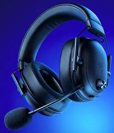
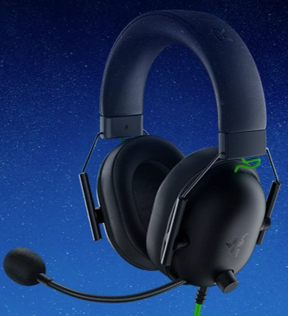
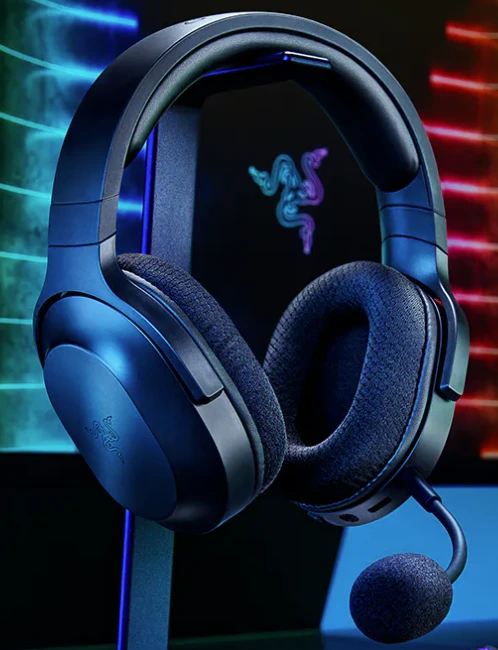
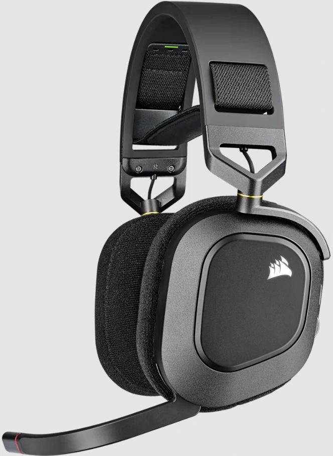
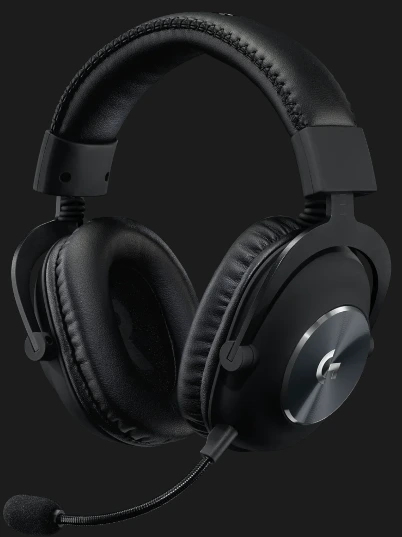
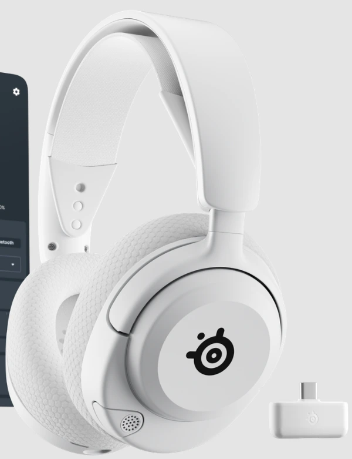
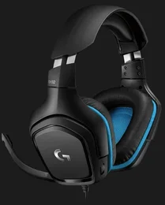
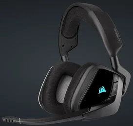
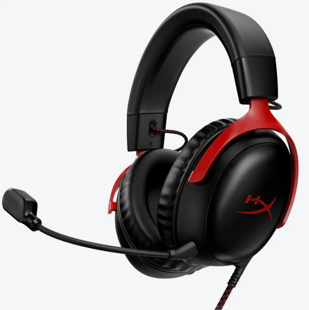
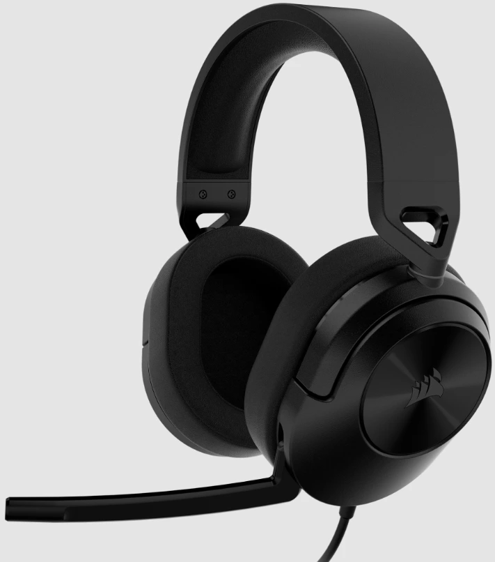

🛡️ Recomendaciones reales desde 2017
⭐ Análisis imparciales por expertos
🛡️ Recomendaciones reales desde 2017
⭐ Análisis imparciales por expertos

Contenido actualizado en junio de 2025
Bienvenido a la guía definitiva sobre auriculares gaming de 2025. Si buscas los mejores cascos con micrófono para jugar en PC, PS5, Xbox o móvil, aquí encontrarás recomendaciones basadas en pruebas reales. Soy Carlos, analista con 15 años de experiencia en periféricos gaming. Te comparto lo que realmente vale la pena.
| Imagen | Modelo | Lo mejor | A tener en cuenta | Comprar |
|---|---|---|---|---|
|  | Razer BlackShark V2 HyperSpeed | 🔊 Sonido THX posicional, ⚡ Conexión HyperSpeed, 🔋 Batería 70h | 🎧 Ideal para eSports, 💬 Micrófono nítido | Ver en Amazon |
|  | Razer BlackShark V2 X | 💰 Calidad-precio brutal, 🎮 Sonido envolvente 7.1 | 🎧 Ligero y cómodo, 🎤 Micrófono cardioide | Ver en Amazon |
|  | Razer Barracuda X | 🎮 Multiplataforma, 🔇 Micrófono desmontable, ⚡ Conexión USB-C | 🔋 Hasta 50h de batería, 👂 Peso ultraligero | Ver en Amazon |
|  | Corsair HS80 RGB Wireless | 🔊 Sonido Dolby Atmos, 🎧 Diadema flotante | 🔋 Buena autonomía, 💬 Micrófono abatible | Ver en Amazon |
|  | Logitech G PRO X | 🎙️ Micrófono Blue VO!CE, 🎮 Sonido envolvente pro | ⚙️ Configuración avanzada, 💪 Construcción premium | Ver en Amazon |
|  | SteelSeries Arctis Nova 5 | 🧠 Sonido espacial personalizado, 🔋 Batería 60h, 🎧 Cómodo para largas sesiones | 📱 App SteelSeries GG, 🎮 Compatible con todo | Ver en Amazon |
|  | Logitech G432 | 💰 Precio asequible, 🎧 Sonido 7.1 DTS:X | 🎤 Micrófono plegable, 🧩 Buen rendimiento por el precio | Ver en Amazon |
|  | Corsair VOID RGB ELITE | 🎧 Sonido 7.1 potente, 🌈 RGB llamativo, 🛋️ Almohadillas cómodas | 🎤 Mic. abatible, 🖥️ Compatible con PC y consolas | Ver en Amazon |
|  | HyperX Cloud III | 🔊 Drivers 53mm mejorados, 🎧 Sonido cálido y envolvente | 💬 Mic. claro, 🎚️ Incluye DAC USB | Ver en Amazon |
|  | Corsair HS55 SURROUND | 🧊 Diseño ligero, 🔊 Sonido 7.1 con adaptador USB | 🎤 Micrófono abatible, 🪶 Cómodo muchas horas | Ver en Amazon |
Lo mejor: 🔊 Sonido THX posicional, ⚡ Conexión HyperSpeed, 🔋 Batería 70h
A tener en cuenta: 🎧 Ideal para eSports, 💬 Micrófono nítido
Lo mejor: 💰 Calidad-precio brutal, 🎮 Sonido envolvente 7.1
A tener en cuenta: 🎧 Ligero y cómodo, 🎤 Micrófono cardioide
Lo mejor: 🎮 Multiplataforma, 🔇 Micrófono desmontable, ⚡ Conexión USB-C
A tener en cuenta: 🔋 Hasta 50h de batería, 👂 Peso ultraligero
Lo mejor: 🔊 Sonido Dolby Atmos, 🎧 Diadema flotante
A tener en cuenta: 🔋 Buena autonomía, 💬 Micrófono abatible
Lo mejor: 🎙️ Micrófono Blue VO!CE, 🎮 Sonido envolvente pro
A tener en cuenta: ⚙️ Configuración avanzada, 💪 Construcción premium
Lo mejor: 🧠 Sonido espacial personalizado, 🔋 Batería 60h, 🎧 Cómodo para largas sesiones
A tener en cuenta: 📱 App SteelSeries GG, 🎮 Compatible con todo
Lo mejor: 💰 Precio asequible, 🎧 Sonido 7.1 DTS:X
A tener en cuenta: 🎤 Micrófono plegable, 🧩 Buen rendimiento por el precio
Lo mejor: 🎧 Sonido 7.1 potente, 🌈 RGB llamativo, 🛋️ Almohadillas cómodas
A tener en cuenta: 🎤 Mic. abatible, 🖥️ Compatible con PC y consolas
Lo mejor: 🔊 Drivers 53mm mejorados, 🎧 Sonido cálido y envolvente
A tener en cuenta: 💬 Mic. claro, 🎚️ Incluye DAC USB
Lo mejor: 🧊 Diseño ligero, 🔊 Sonido 7.1 con adaptador USB
A tener en cuenta: 🎤 Micrófono abatible, 🪶 Cómodo muchas horas
Unos auriculares gaming van mucho más allá de simplemente escuchar. Se trata de dispositivos diseñados para ofrecer una experiencia inmersiva con sonido envolvente, micrófonos de alta calidad y comodidad para largas sesiones. Para mí, es una herramienta clave si quieres competir o disfrutar de tus juegos favoritos al máximo.
Sonido envolvente: fundamental para juegos en los que importa la ubicación de los sonidos.
Micrófono claro: comunicación nítida en partidas online es vital.
Comodidad superior: imprescindibles para largas sesiones sin fatiga.
Compatibilidad: funcionan con PC, consolas y móviles.
Estética y personalización: completan tu setup gaming con estilo.
⭐ Valoración del experto: 5/5
Este modelo ha sido mi favorito durante las pruebas más intensas. El Razer BlackShark V2 HyperSpeed ofrece un sonido tan limpio y posicional que me dio ventaja real en partidas de Valorant. No noté latencia en ningún momento, y el aislamiento de ruido me permitió centrarme completamente en el juego. La batería supera fácilmente las 40 horas, y el diseño es tan ligero que a veces olvidaba que lo llevaba puesto. Es el auricular que yo usaría para competir.
⭐ Valoración del experto: 4.5/5
Este auricular me acompañó durante varias sesiones largas y me dejó una impresión excelente. El Razer BlackShark V2 X ofrece una calidad de audio sorprendente para su precio. Se nota que está pensado para eSports, con un diseño cómodo, ligero y gran aislamiento. El micrófono recoge la voz con claridad, incluso en habitaciones con ruido. Lo recomendaría como la mejor opción por debajo de los 70 euros.
⭐ Valoración del experto: 4/5
Llevo usando los Razer Barracuda X desde hace semanas y son mi elección favorita para jugar en portátil o consola. Pesan poquísimo, casi ni los notas puestos, y la conexión es instantánea. Me encanta cómo pasan de la Steam Deck al móvil sin perder calidad. El sonido es más limpio de lo que esperaba para su precio y el micrófono desmontable me viene genial para usarlos también como auriculares normales. Si buscas algo todo en uno, estos cumplen con nota.
⭐ Valoración del experto: 4.5/5
El Corsair HS80 me encantó desde que lo saqué de la caja. Tiene un diseño premium, con diadema flotante muy cómoda y sonido Dolby Atmos que me sumergió completamente en juegos como Cyberpunk 2077. La conexión inalámbrica no tiene cortes y el RGB es espectacular si te gusta cuidar la estética del setup. El micrófono también me pareció muy sólido. Lo usaría como opción principal sin dudarlo.
⭐ Valoración del experto: 5/5
Este modelo es uno de los más profesionales que he usado. Desde el primer momento se nota que el Logitech G PRO X está diseñado para eSports: el sonido es súper detallado y el micrófono Blue VO!CE marca una diferencia brutal en las comunicaciones. Me gusta que puedas personalizar tanto el audio como la ecualización del micro con el software de Logitech. Además, su construcción en metal inspira durabilidad. Una apuesta segura para jugadores exigentes.
⭐ Valoración del experto: 4.5/5
He probado los SteelSeries Arctis Nova 5 durante varias sesiones maratonianas y me han convencido totalmente. Lo que más me sorprendió fue la precisión del audio espacial, algo esencial en juegos competitivos. Además, pude personalizar los perfiles de audio fácilmente desde su app, lo cual me permitió adaptarlos a cada tipo de juego. La comodidad es otro punto fuerte: incluso después de horas, no sentí fatiga. La batería dura días sin necesidad de cargarlos, lo que es un plus si juegas a diario.
⭐ Valoración del experto: 4/5
El Logitech G432 fue uno de los primeros modelos que probé, y para su precio me sorprendió muchísimo. El sonido 7.1 realmente mejora la experiencia en shooters como Warzone o Apex, permitiéndome detectar pasos y disparos con precisión. La comodidad es adecuada, aunque tras muchas horas puede notarse algo caluroso. El micrófono capta bien la voz y se puede silenciar con solo subirlo. Es un auricular ideal si no quieres gastar mucho pero aún así disfrutar de sonido envolvente.
⭐ Valoración del experto: 4/5
He jugado varias noches con los Corsair VOID RGB ELITE y me gustó mucho su potencia de sonido. La experiencia es inmersiva, con bajos profundos y buena separación de canales. Aunque el diseño es algo voluminoso, resulta cómodo y su estilo RGB es llamativo para setups con iluminación. El micrófono funciona bien y la función para silenciarlo al levantarlo es muy práctica. Lo recomendaría a quien busque estética sin renunciar a calidad sonora.
⭐ Valoración del experto: 4.5/5
He probado todos los HyperX desde el Cloud Alpha y puedo decir que este Cloud III es el mejor hasta ahora. El sonido es cálido, nítido y con graves bien equilibrados, perfecto para todo tipo de juegos. El micrófono se escucha con una claridad brutal, y el diseño sigue siendo muy cómodo incluso después de 4 o 5 horas. Me gustó que venga con DAC incluido, algo que mejora bastante el audio en PC. Es un auricular redondo.
⭐ Valoración del experto: 4/5
Este auricular fue una grata sorpresa. El Corsair HS55 Surround combina ligereza con una buena calidad de sonido 7.1. Lo probé en sesiones largas y no me molestó en absoluto. El micrófono capta bien la voz, aunque sin florituras. Para ser un modelo económico, me gustó que venga con adaptador USB para activar el surround en PC. Si buscas algo sencillo pero eficaz, es ideal.
Después de probar todos estos modelos a fondo durante semanas, tengo que decir que no hay un único ganador absoluto. Depende mucho de tu presupuesto, plataforma y estilo de juego. Aun así, te resumo mis recomendaciones personales según distintos perfiles:
Me quedo sin duda con el Razer BlackShark V2 HyperSpeed. Es el que más he usado en sesiones competitivas: sonido posicional perfecto, cero latencia, micrófono clarísimo y una batería que parece infinita. Ideal para Valorant, Apex, Warzone o cualquier juego donde cada milisegundo cuenta. Si quieres algo de nivel pro, es este.
🎧 Razer BlackShark V2 HyperSpeed en AmazonEl Razer BlackShark V2 X es el auricular que más me sorprendió por lo que cuesta. Tiene sonido envolvente muy logrado, buen aislamiento y un diseño ligerísimo. Lo recomendaría a cualquiera que quiera un sonido top por menos de 70 euros. Si tienes presupuesto ajustado, es el que yo elegiría sin pensarlo.
🎧 Razer BlackShark V2 X en AmazonEl Razer Barracuda X me encantó por su versatilidad. Lo usé en la Steam Deck, en PS5 y hasta para ver pelis en el móvil. Es muy ligero y tiene un sonido limpio, con un micrófono desmontable que viene de lujo si también los quieres para ir por la calle. Para un uso híbrido, este es mi favorito.
🎧 Razer Barracuda X en AmazonLos gaming están optimizados para ofrecer mejor sonido posicional, micrófonos de alta calidad y comodidad superior durante horas.
Sí, la mayoría lo son. Algunos modelos incluso traen adaptadores USB o conexiones duales para facilitar su uso.
Si valoras la libertad de movimiento y una experiencia sin cables, definitivamente sí, especialmente si la latencia está bien controlada.
Modelos como el Razer BlackShark V2 HyperSpeed o el SteelSeries Arctis Nova 5 ofrecen compatibilidad total con consolas y una experiencia inalámbrica sin latencia.
🎧 Razer BlackShark V2 HyperSpeed en Amazon 🎧 SteelSeries Arctis Nova 5 en AmazonEl Razer BlackShark V2 HyperSpeed cuenta con un micrófono con cancelación de ruido avanzada que destaca por su claridad incluso en ambientes ruidosos.
🎧 Razer BlackShark V2 HyperSpeed en AmazonSi priorizas libertad de movimiento, el inalámbrico es ideal. Para sesiones largas sin interrupciones, los modelos con cable como Logitech G432 también rinden muy bien.
🎧 Logitech G432 en AmazonEl Logitech G432 es una excelente opción económica con sonido envolvente 7.1, ideal si buscas calidad sin gastar demasiado.
🎧 Logitech G432 en AmazonLos Logitech G432 y el Razer BlackShark V2 X destacan por su equilibrio entre precio, calidad de sonido y comodidad. Son ideales si buscas rendimiento sin gastar demasiado.
🎧 Razer BlackShark V2 X en Amazon 🎧 Logitech G432 en AmazonEl Corsair HS80 RGB Wireless es una maravilla en cuanto a comodidad y calidad de audio. Su diadema flotante reparte el peso y se adapta muy bien incluso tras varias horas de uso intensivo.
🎧 Corsair HS80 RGB Wireless en AmazonSí, el Razer Barracuda X es una excelente opción por su peso ligero, conectividad USB-C y micrófono desmontable. Ideal si buscas un auricular versátil para jugar en PS5, Switch o móvil y además usarlo como auricular de diario.
🎧 Razer Barracuda X en AmazonEl Razer BlackShark V2 HyperSpeed me ofreció una experiencia sin latencia y con un sonido posicional tan preciso que realmente marca la diferencia en shooters. Si compites o buscas ventaja, es el más recomendable.
🎧 Razer BlackShark V2 HyperSpeed en AmazonEl Logitech G PRO X lleva el micrófono Blue VO!CE, que mejora drásticamente la calidad de voz. Es el más claro y configurable que he probado, ideal para streaming, grabaciones o comunicación seria en equipo.
🎧 Logitech G PRO X en Amazon